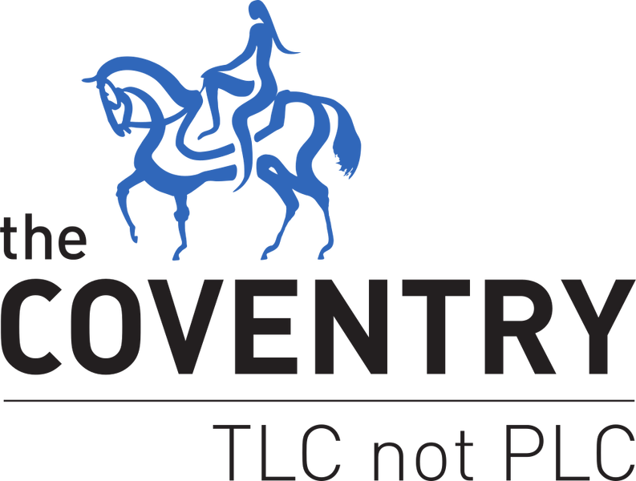
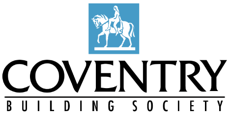

Coventry
Coventry
Coventry
Coventry
Click any card to explore that society's page.
Coventry Building Society was formed in 1983 through the merger of Coventry Economic Building Society and Coventry Provident Building Society, following a series of consolidations among local Coventry-based societies dating back to the 19th century.
It has since expanded through further mergers and acquisitions, most notably with Stroud & Swindon Building Society in 2010. In 2025, Coventry Building Society completed its acquisition of The Co-operative Bank, incorporating its branch network and digital operations.
Headquartered in Binley, Coventry, the society operates 64 Coventry Building Society branches and 50 Co-operative Bank branches across the United Kingdom. It also owns the digital bank Smile, a trading name of The Co-operative Bank.
2016-Present
2006-2016
1988-2006Last updated: 2026-05-05 00:00:00